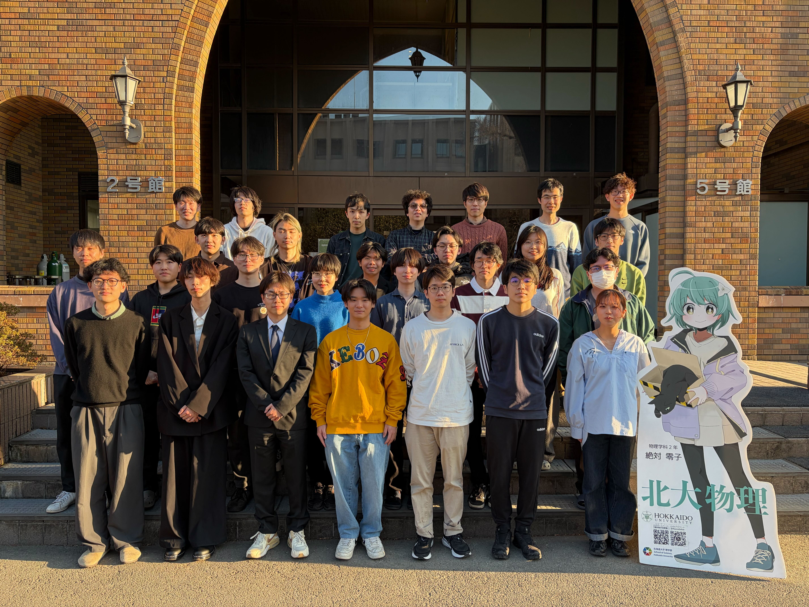
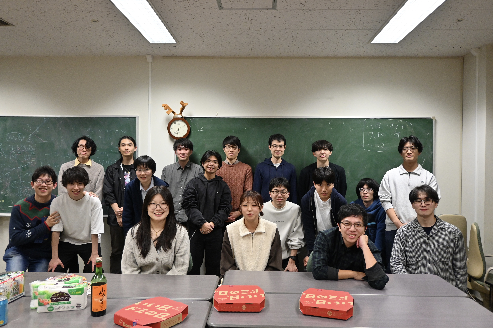

メンバー



| 氏名 | 役職 | 居室 | email (_at_ → @) |
|---|---|---|---|
| 速水 賢 | 教授 | 2-11-13号室 | hayami_at_sci.hokudai.ac.jp |
| 大岩 陸人 | 講師 | 2-10-13号室 | roiwa_at_phys.sci.hokudai.ac.jp |
| 佐藤 匠 | PD | 2-11-10号室 | sato_at_phys.sci.hokudai.ac.jp |
| 小川 祐巨 | PD | 2-9-07号室 | ogawa.y_at_phys.sci.hokudai.ac.jp |
| 國吉 真伍 | PD | 2-3-15号室 | kuniyoshi_at_phys.sci.hokudai.ac.jp |
| 印田 朱音 | D2 | 2-11-10号室 | inda_at_phys.sci.hokudai.ac.jp |
| 神田 修平 | D1 | 2-9-13号室 | kanda_at_phys.sci.hokudai.ac.jp |
| 詹 承諭 | D1 | 2-10-10号室 | chan_at_phys.sci.hokudai.ac.jp |
| 髙須 湧雅 | D1 | 2-10-01号室 | takasu_at_phys.sci.hokudai.ac.jp |
| 大形 悟 | D1 | 2-9-13号室 | ohgata.s_at_phys.sci.hokudai.ac.jp |
| 査 言 | D1 | 2-9-08号室 | yzha_at_phys.sci.hokudai.ac.jp |
| 関 聡 | D1 | 2-9-08号室 | kan_at_phys.sci.hokudai.ac.jp |
| 朱 奕誠 | M2 | 2-3-15号室 | zhu_at_phys.sci.hokudai.ac.jp |
| 内野 研 | M2 | 2-9-07号室 | uchino_at_phys.sci.hokudai.ac.jp |
| 白戸 達也 | M2 | 2-9-08号室 | tshirato_at_phys.sci.hokudai.ac.jp |
| 山中 大聖 | M2 | 2-8-10号室 | yamanaka_at_phys.sci.hokudai.ac.jp |
| 遠藤 天地 | M2 | 2-10-01号室 | endo_at_phys.sci.hokudai.ac.jp |
| 謝 羽 | M2 | 2-9-13号室 | sya_at_phys.sci.hokudai.ac.jp |
| 城 拓巳 | M2 | 2-9-07号室 | shiro_at_phys.sci.hokudai.ac.jp |
| 井艸 駿太 | M1 | 2-10-10号室 | s.igusa_at_phys.sci.hokudai.ac.jp |
| 内藤 凜太朗 | M1 | 2-8-10号室 | naito_at_phys.sci.hokudai.ac.jp |
| Reivienne Jei Laxamana | M1 | 2-10-01号室 | laxamana_at_phys.sci.hokudai.ac.jp |
| 入山 侑大 | M1 | 2-9-07号室 | iriyama_at_phys.sci.hokudai.ac.jp |
| 大瀬 椋太郎 | M1 | 2-8-10号室 | ryotaro_at_phys.sci.hokudai.ac.jp |
| 齋藤 奏和 | B4 | 2-11-10号室 | s.saito_at_phys.sci.hokudai.ac.jp |
| 城ケ﨑 健真 | B4 | 2-8-10号室 | kenshin_at_phys.sci.hokudai.ac.jp |
| 濱口 朋快 | B4 | 2-9-13号室 | hama_T_at_phys.sci.hokudai.ac.jp |
| 三浦 一晟 | B4 | 2-10-10号室 | miura_at_phys.sci.hokudai.ac.jp |
Almni
| 氏名 | 在籍期間 | B4 | 修士 | 博士 | 取得学位、役職 | その後 |
|---|---|---|---|---|---|---|
| 沖上 和希 | 2021.4-2026.3 | ✓ | ✓ | 博士学位 | 就職 | |
| 須川 翔太 | 2023.4-2026.3 | ✓ | ✓ | 修士学位 | 就職 | |
| 桐越 研光 | 2022.4-2024.3 | ポスドク | 岡山大学ポスドク | |||
| 山家 椋太 | 2018.4-2024.3 | ✓ | ✓ | ✓ | 博士学位 | 就職 |
| 松本 拓哉 | 2017.4-2024.3 | ✓ | ✓ | * | 修士学位 | 就職 |
| 八城 愛美 | 2016.4-2022.3 | ✓ | ✓ | ✓ | 博士学位 | 就職 |